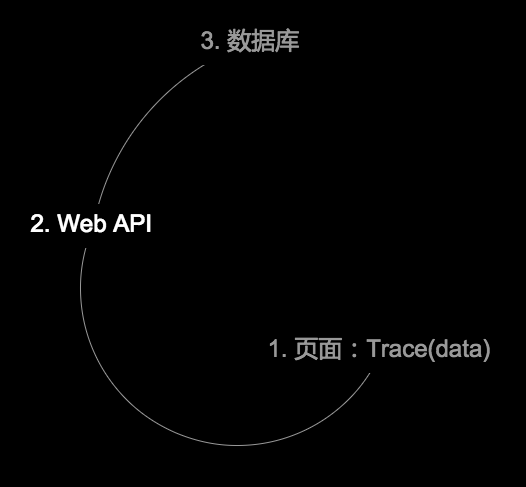
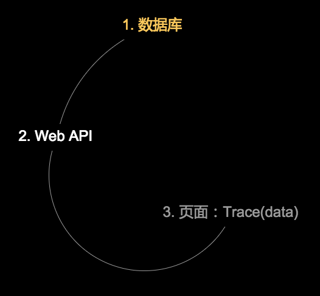
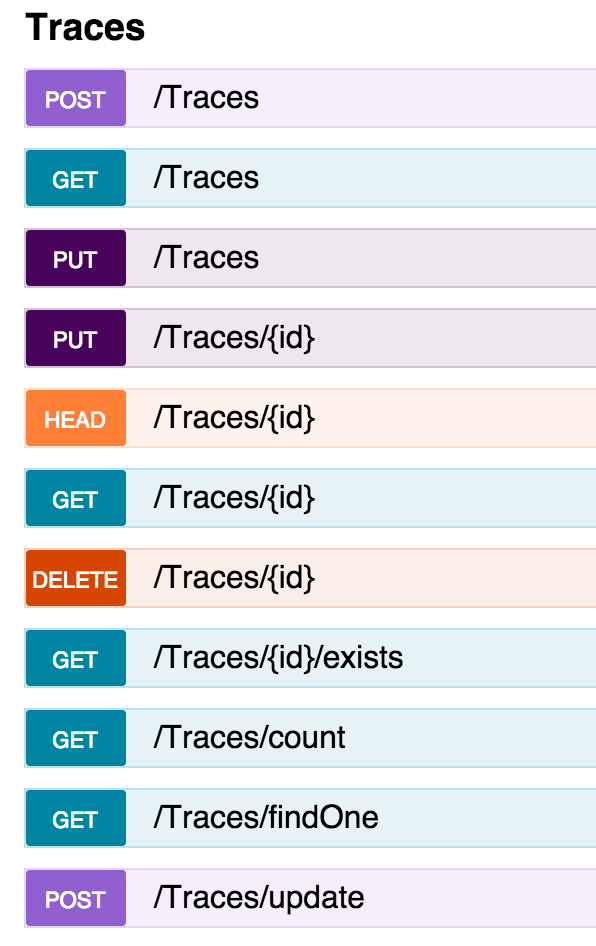
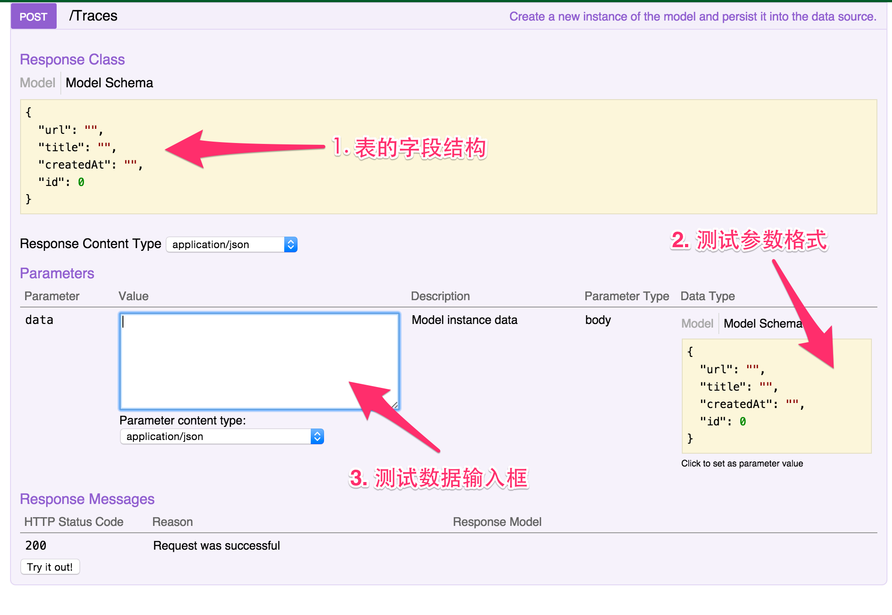
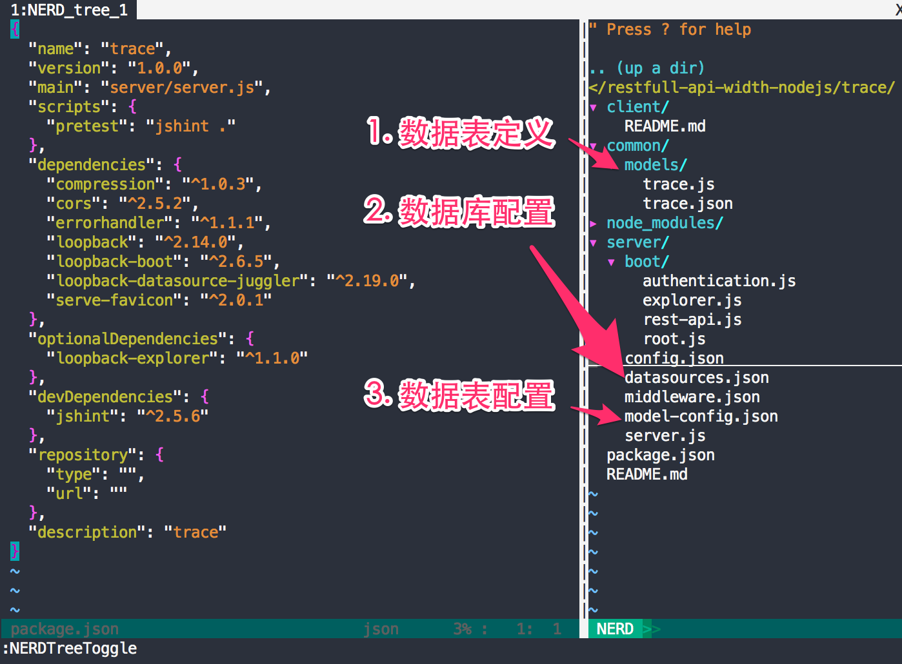

Targets
学会利用NodeJS开发后台的数据接口
WTF
$.ajax({
"url":"今天就是要弄这货！开发哥给的所谓的CGI接口！"
});
Practice
开发一套统计页面PV的API
Flow

DB First

Step1 安装MongoDB
# mac
brew update
brew install mongodb
- MAC安装：/mamboer/mac/wiki/mongodb
- Windows安装：问度娘
验证MongoDB
mongo
MongoDB shell version: 3.0.2
connecting to: test
>
数据库和表的设计？
跳过！！！
Step2 秘密武器

LoopBack Framework
什么鬼东西
- 一个组织，expressjs框架的主要赞助者
- 一个工具，利用loopback框架快速创建数据库、表和WebAPI
- loopback是利用nodejs快速搭建web api的框架
安装strongloop
$ npm install -g strongloop
创建loopback app
$ slc loopback
_-----_
| | .--------------------------.
|--(o)--| | Let's create a LoopBack |
`---------´ | application! |
( _´U`_ ) '--------------------------'
/___A___
| ~ |
__'.___.'__
´ ` |° ´ Y `
[?] What's the name of your application? trace
[?] Enter name of the directory to contain the project: trace
创建数据表:trace
$ cd trace
$ slc loopback:model
? Enter the model name: Trace
? Select the data-source to attach Trace to: db (memory)
? Select model's base class: PersistedModel
? Expose Trace via the REST API? Yes
? Custom plural form (used to build REST URL):
Let's add some Trace properties now.
创建表的字段
url、title、createdAt
Enter an empty property name when done.
? Property name: url
invoke loopback:property
? Property type: string
? Required? Yes
Let's add another Trace property.
Enter an empty property name when done.
? Property name: title
invoke loopback:property
? Property type: string
? Required? Yes
Let's add another Trace property.
Enter an empty property name when done.
? Property name: createdAt
invoke loopback:property
? Property type: date
? Required? Yes
运行app
$ node .
Browse your REST API at http://0.0.0.0:3000/explorer
Web server listening at: http://0.0.0.0:3000/
查看app的api
齐全的api
api说明及测试方法
可扩展的loopback项目源码
HOW - 如果扩展?
- 添加MongoDB数据源
- 为Trace表添加字段
- 新增表Test
添加MongoDB数据源
修改datasources.json
"dbMongo": {
"host": "127.0.0.1",
"port": 27017,
"database": "traceDs",
"name": "db",
"connector": "mongodb"
}
$ npm install loopback-connector-mongodb --save
为Trace表添加字段
修改models/trace.json
"test": {
"type": "string"
}
新增表Test
- 复制修改models/trace.json
- 在model-config.json里添加配置
"Test": {
"dataSource": "dbMongo",
"public": true
}
到此为止
- 学会安装MongoDB
- 了解Strongloop和Loopback
- 学会利用Strongloop创建Loopback项目
- 学会使用Loopback项目生成的WebAPI
- 学会创建表、修改表
- 学会切换数据源
NodeJS开发不止如此
- 客户端开发（Node Webkit）
- 网站开发（ExpressJS）
- 组件开发（npmjs.com）
- 通用的编程思想（OO、MVC、MVVM）
Anyway
会JS ≈ 会NodeJS ≈ 会开发